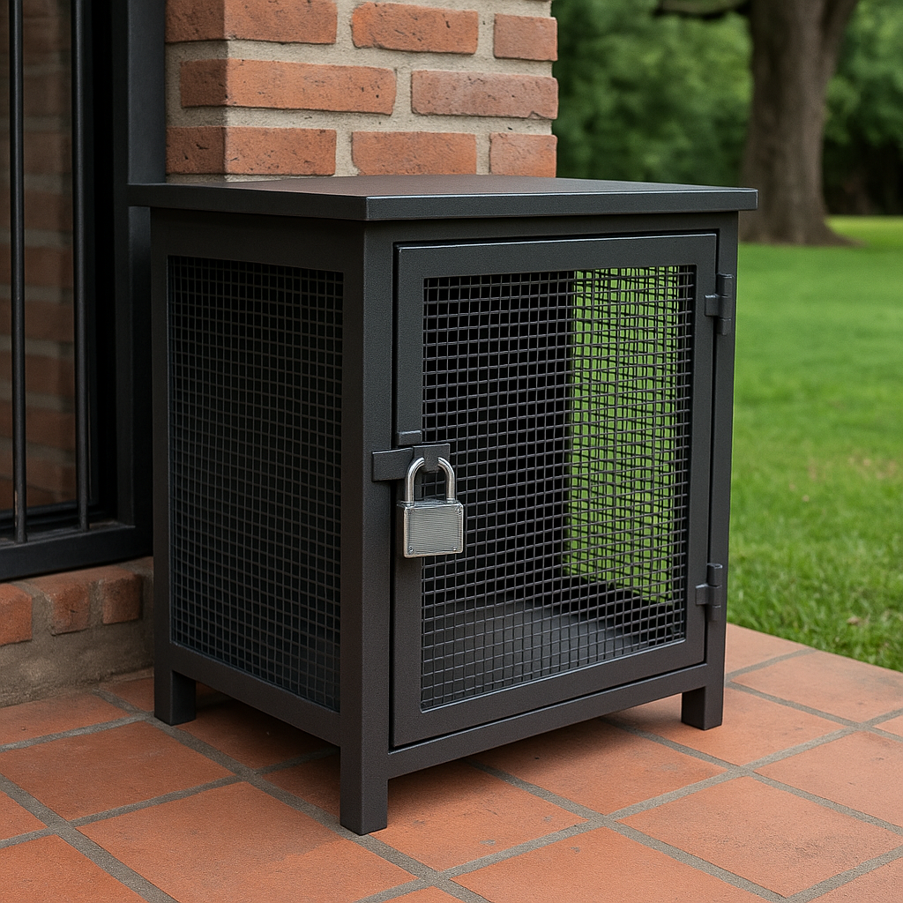
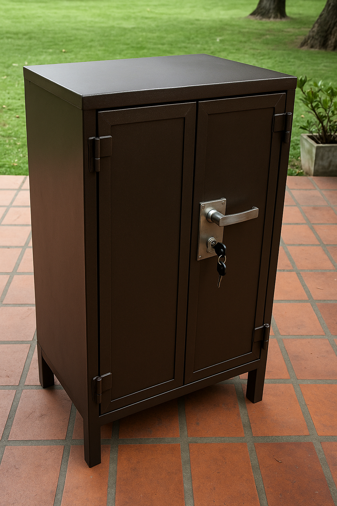
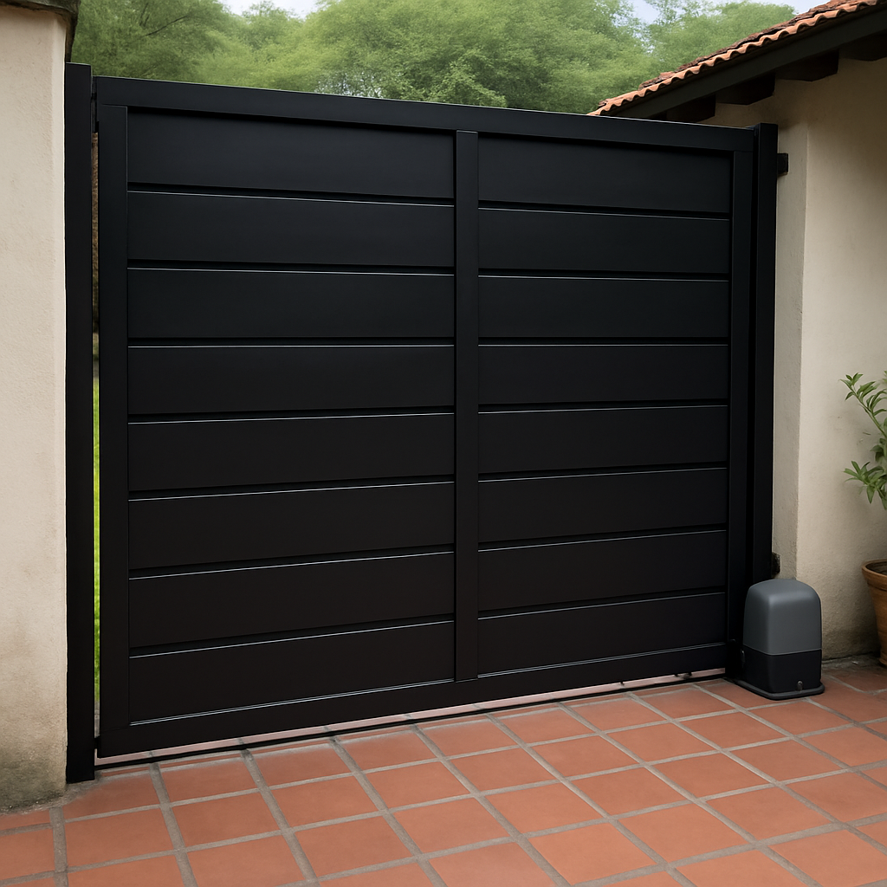
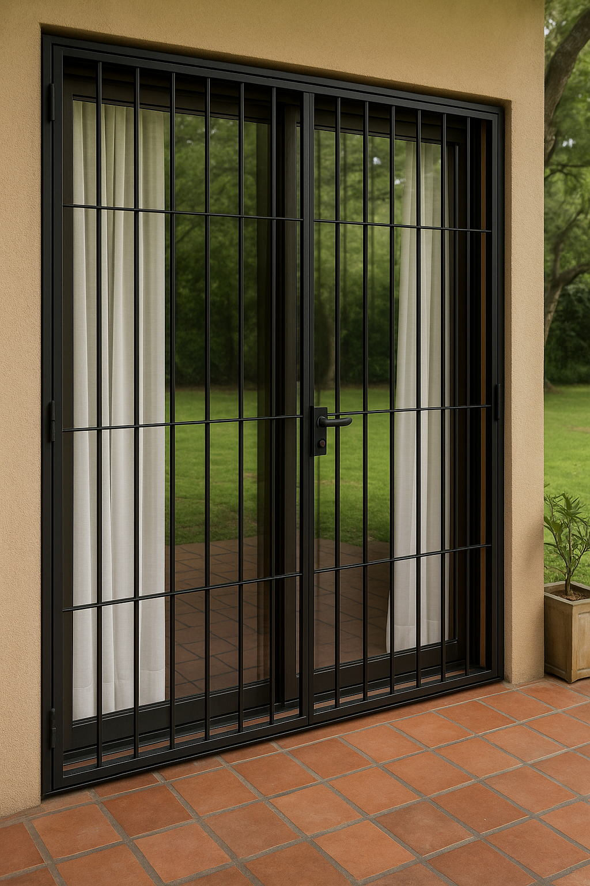
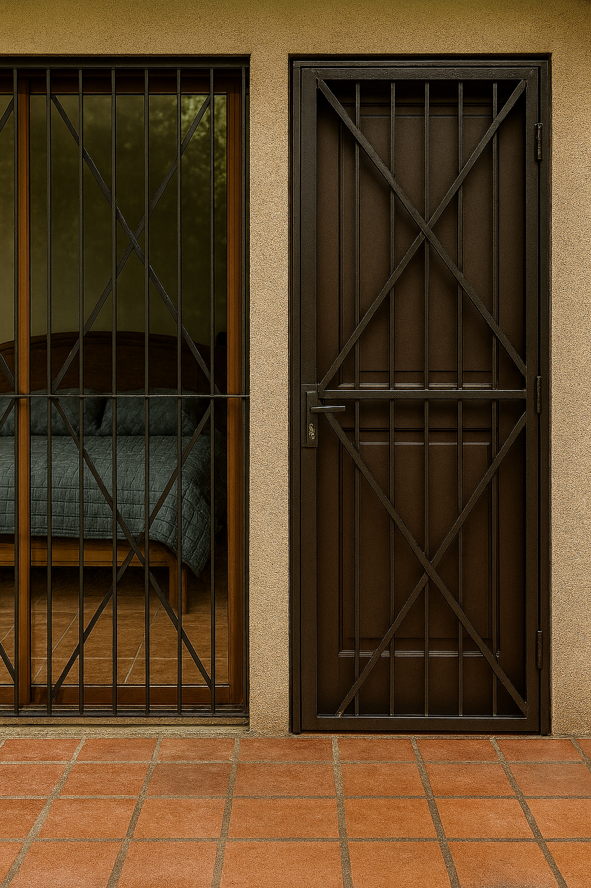

Proyectos Realizados






¿Qué podemos fabricar para vos?
- Rejas de seguridad fijas y móviles
- Portones corredizos, levadizos y automatizados
- Estructuras metálicas a medida para viviendas y galpones
- Cerramientos para patios, balcones o espacios de mascotas
- Jaulas para medidores y protecciones técnicas
- Barandas, pasamanos y portones de diseño personalizado